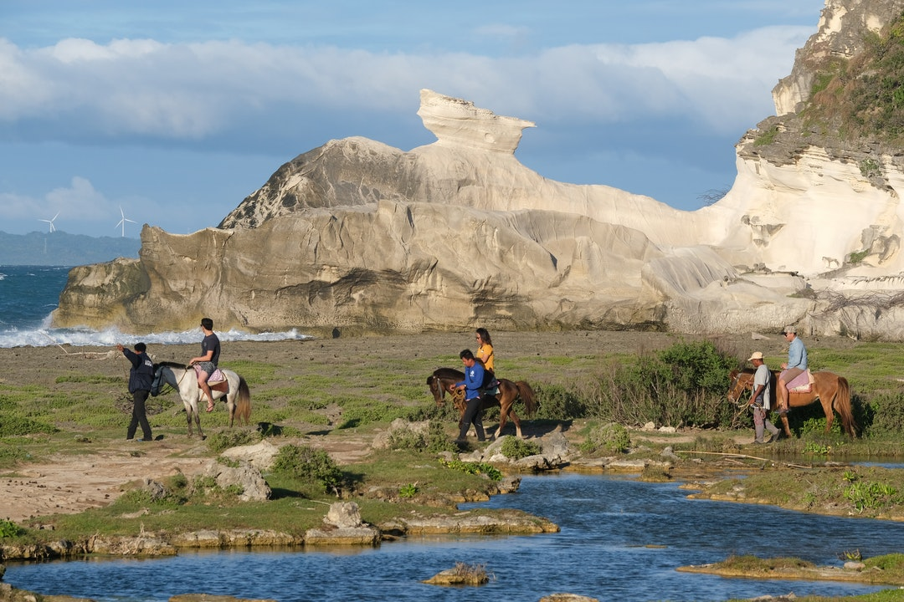
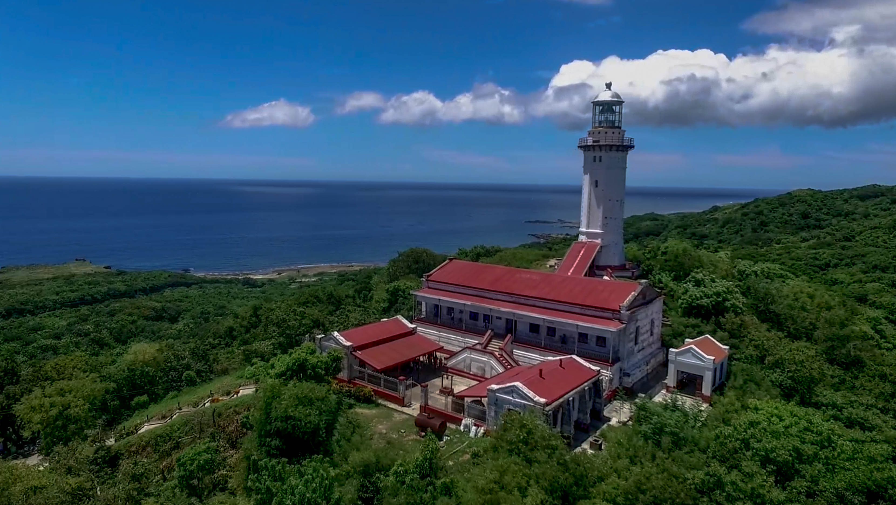

Kapurpurawan Rock Formation
Found in the rocky parts of Burgos, Ilocos Norte, t
hese rock formations cannot be classified as something common as
they are formed over years and years to a formation that you’d unexpectedly see.
1 / 4

2 / 4

Cape Bojeador Lighthouse
Dubbed as the tallest lighthouse in the Philippines
Dubbed as the tallest lighthouse in the Philippines
3 / 4

Paoay Church
Its history is dated back in 1694 when its construction was started by the Augustinian friars.
Its history is dated back in 1694 when its construction was started by the Augustinian friars.
4 / 4

Malacanang of the North
A 2-storey mansion in a 5-hectare land located at Baranagay Suba, Paoay Ilocos Norte
A 2-storey mansion in a 5-hectare land located at Baranagay Suba, Paoay Ilocos Norte